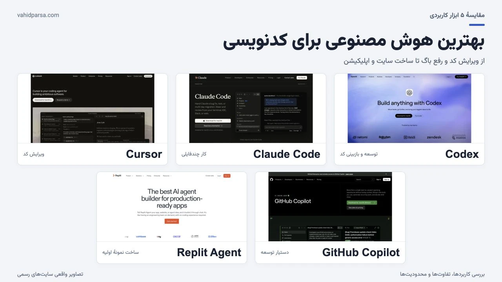
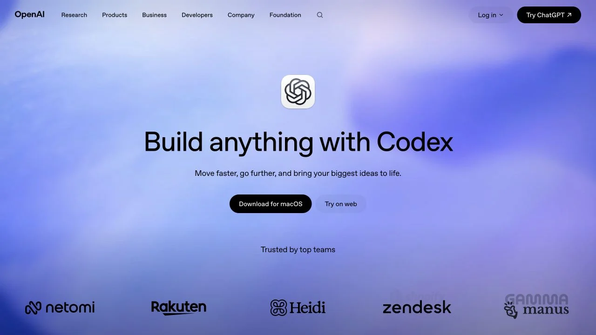
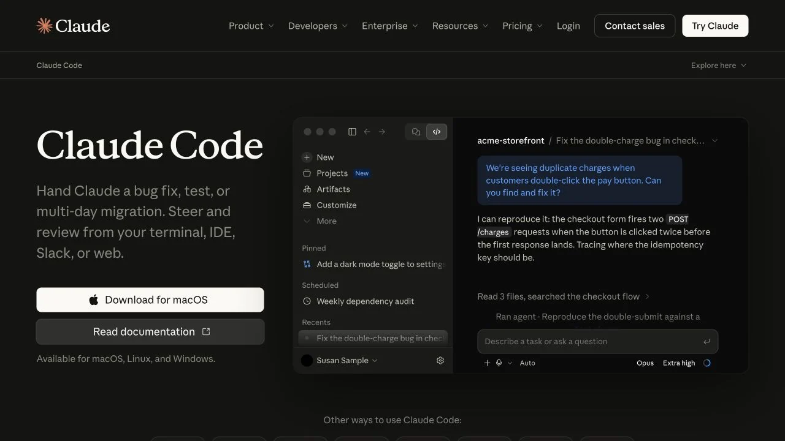
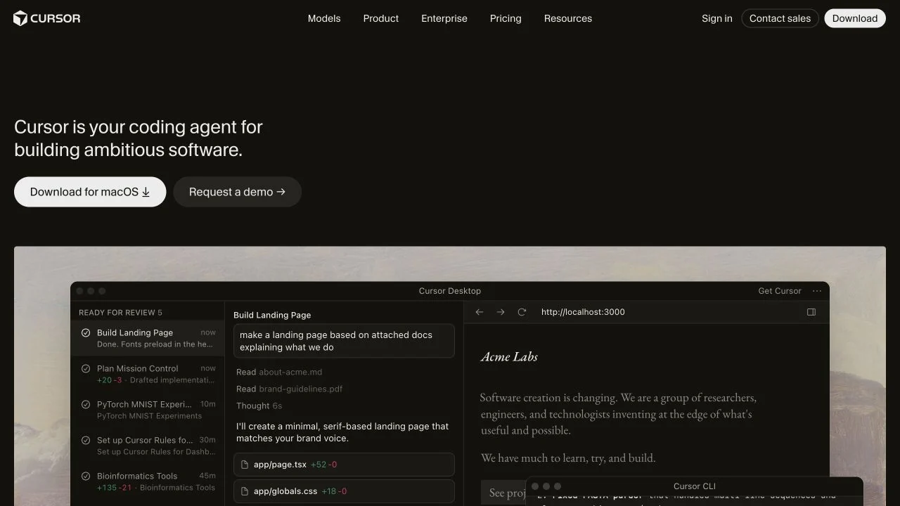
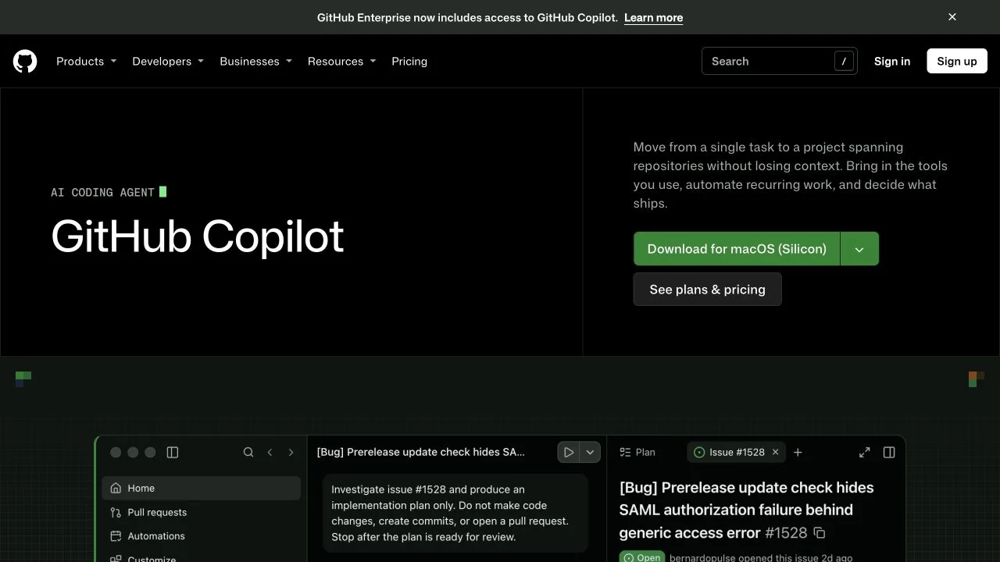
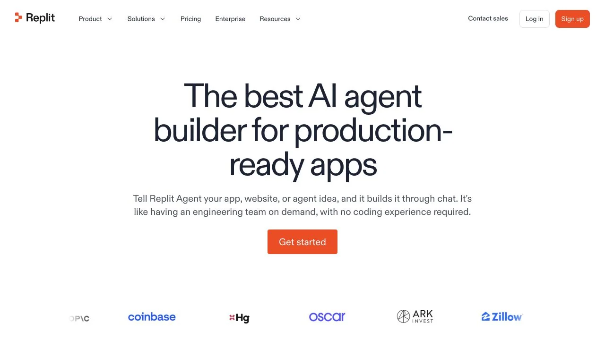

بهترین هوش مصنوعی برای کدنویسی؛ مقایسهٔ ۵ ابزار کاربردی
مقایسهٔ Codex، Claude Code، Cursor، GitHub Copilot و Replit Agent؛ کاربردها، محدودیتها و راهنمای انتخاب بهترین هوش مصنوعی برای کدنویسی و ساخت سایت.

بهترین هوش مصنوعی برای کدنویسی کدام است؟
اگر روی یک پروژهٔ موجود کار میکنی، Codex و Claude Code برای بررسی کد، انجام تغییر و پیگیری کارهای چندمرحلهای ارزش بررسی دارند. اگر میخواهی هوش مصنوعی در محیط ویرایش کد همراهت باشد، Cursor و GitHub Copilot را مقایسه کن. برای تبدیل یک ایده به نمونهٔ قابل اجرا در محیط تحت وب، Replit Agent هم گزینهٔ قابلتوجهی است.
اما یک پاسخ ثابت برای همه وجود ندارد. ساخت اولین صفحهٔ شخصی با اصلاح یک پروژهٔ چندساله فرق میکند. گاهی توضیح خوب یک خطا مهمتر از تولید چند صد خط کد است؛ گاهی هم لازم داری ابزار چند فایل مرتبط را پیدا کند، تغییر بدهد و نتیجه را بررسی کند.
این راهنما بر اساس امکانات معرفیشده در سایتها و مستندات رسمی تهیه شده و پیشنهادهای انتخاب، جمعبندی تحلیلی همین تفاوتهاست. ترتیب معرفی، رتبهبندی سرعت یا دقت در یک بنچمارک اختصاصی نیست. نام مدلها، طرحها و سهمیهها تغییر میکنند؛ انتخاب نهایی را با یک کار واقعی از پروژهٔ خودت بسنج.
| ابزار | چه زمانی بررسیاش کنی؟ | نکتهٔ تصمیمگیری |
|---|---|---|
| Codex | تغییر روی پروژه، دیباگ و بازبینی کد | زمینهٔ پروژه و معیار پایان کار را دقیق مشخص کن |
| Claude Code | کار چندفایلی و گردش کار توسعه | راه دسترسی و مجوزهای محیط را بررسی کن |
| Cursor | ویرایش روزمره و ساخت مرحلهبهمرحله کنار کد | ببین تجربهٔ محیط آن با شیوهٔ کارت سازگار است یا نه |
| GitHub Copilot | کمک در ویرایشگر و همکاری در جریان توسعه | امکانات دقیق را برای ویرایشگر خودت بررسی کن |
| Replit Agent | ساخت نمونهٔ اولیهٔ وبسایت یا اپلیکیشن | هزینهٔ اجرا و وابستگی پروژه به سرویس را بسنج |
اول تفاوت مدل، دستیار و عامل کدنویسی را بشناس
مدل زبانی، موتور تولید و تحلیل پاسخ است؛ ابزار کدنویسی، محیط و امکاناتی است که آن موتور را به پروژه وصل میکند. بنابراین مقایسهٔ نام یک مدل با نام یک ویرایشگر، بهتنهایی مقایسهٔ کاملی نیست. حتی ممکن است دو ابزار از مدلهای مشابه استفاده کنند، اما تجربهٔ کارشان به دلیل تفاوت در دسترسی به فایلها، نمایش تغییرات و اجرای دستورها متفاوت باشد.
یک دستیار میتواند کد پیشنهاد بدهد یا مسئلهای را توضیح بدهد. عامل کدنویسی میتواند در یک محیط مجاز، چند مرحلهٔ مرتبط را دنبال کند؛ مثلاً فایل مرتبط را پیدا کند، تغییر بدهد و بررسی مناسب را اجرا کند. میزان دسترسی و استقلال در هر ابزار و حالت کاری متفاوت است. قبل از سپردن پروژه، ببین دقیقاً قرار است چه کاری در چه محیطی انجام شود.
برای انتخاب، پنج سؤال کاربردی بپرس: آیا ابزار فایلهای لازم را میبیند؟ تغییرات را قبل از پذیرش نشان میدهد؟ میتوان نتیجه را در محیط پروژه اجرا کرد؟ هزینهٔ استفاده روشن است؟ و آیا میتوانی کار را به نسخهٔ قبلی برگردانی؟ اینها برای استفادهٔ روزمره از یک عنوان تبلیغاتی مهمترند.
Codex؛ برای پیش بردن کار واقعی در کدبیس

Codex ابزار کدنویسی OpenAI است و در محیطهایی مثل ویرایشگر، خط فرمان و محیط ابری قابل استفاده است. در مستندات رسمی افزونهٔ ویرایشگر، کار با فایلهای باز، بخش انتخابشدهٔ کد، بررسی تغییرات و واگذاری کارهای بزرگتر توضیح داده شده است. بنابراین استفاده از آن به گرفتن یک قطعهکد در گفتوگو محدود نمیشود.
نقطهٔ قوت برای چه کاری است؟ وقتی خروجی مشخصی میخواهی؛ مثلاً رفع خطایی که مراحل بازتولیدش معلوم است، افزودن یک قابلیت محدود یا توضیح ساختار پروژهای که تازه تحویل گرفتهای. پیشنهاد من این است که در شروع، از آن بخواه مسیر حل را توضیح بدهد و بعد تغییر را با معیار قابل بررسی انجام دهد.
محدودیت عملی: وجود دستیار به معنای آماده بودن محیط اجرا نیست. وابستگی نصبنشده، اطلاعات ناکافی یا دستور بررسی نامشخص میتواند نتیجه را ناقص کند. راهنمای رسمی OpenAI هم بر آزمون و بازبینی تأکید دارد. قبل از قبول تغییر، خلاصه و تفاوت فایلها را بخوان و بررسی کن که ادعای «حل شد» با اجرای واقعی کار هماهنگ باشد.
شروع پیشنهادی: یک باگ کوچک انتخاب کن، رفتار فعلی و رفتار مورد انتظار را بنویس و بگو کدام فایلها یا قابلیتها نباید تغییر کنند. بعد از رفع آن، نتیجه را خودت هم بازتولید کن.
Claude Code؛ برای تغییرهای چندفایلی و کار مرحلهبهمرحله

Claude Code محصول Anthropic برای کار با پروژهٔ نرمافزاری است. طبق مستندات رسمی، میتواند کدبیس را بخواند، فایلها را ویرایش کند، دستور اجرا کند و با ابزارهای توسعه ارتباط داشته باشد. راههای استفادهٔ آن شامل ترمینال، افزونههای ویرایشگر، برنامهٔ دسکتاپ و مرورگر است؛ شرایط دسترسی را باید برای همان روش انتخابی بررسی کنی.
نقطهٔ قوت برای چه کاری است؟ برای کاری که به فهم ارتباط چند بخش نیاز دارد، ارزش بررسی دارد؛ مثلاً دنبال کردن مسیر یک درخواست از رابط کاربری تا منطق پردازش، یا اصلاح نام یک مفهوم در چند فایل مرتبط. این ارزیابی به نوع گردش کار آن برمیگردد و ادعای برتری قطعی بر ابزارهای دیگر نیست.
محدودیت عملی: وقتی ابزار امکان اجرای دستور و تغییر فایل دارد، تعریف محدودهٔ کار اهمیت بیشتری پیدا میکند. یک درخواست مبهم مثل «پروژه را بهتر کن» ممکن است تغییرهایی ایجاد کند که اصلاً نیاز نداشتهای. روش استفاده، حساب موردنیاز و سطح دسترسی را از مستندات همان محیط بخوان؛ تجربهٔ گفتوگو در Claude را هم با قابلیتهای Claude Code یکی فرض نکن.
شروع پیشنهادی: ابتدا بخواه ساختار یک بخش را بدون تغییر فایل توضیح بدهد. سپس یک اصلاح کوچک با شرطهای روشن بده و خروجی را در همان بخش بررسی کن.
Cursor؛ برای کسانی که میخواهند کنار هوش مصنوعی کد بزنند

Cursor محیط و عامل کدنویسیای است که در مستنداتش برای شناخت کدبیس، برنامهریزی، ساخت قابلیت، رفع باگ و بازبینی تغییرات مسیرهای مشخص دارد. امکاناتش فقط تکمیل خودکار متن نیست. اگر دوست داری فایلها، گفتوگو و نتیجهٔ ویرایش را در یک جریان کاری نزدیک به هم ببینی، این رویکرد میتواند برایت مناسب باشد.
نقطهٔ قوت برای چه کاری است؟ ویرایشهای روزمره، اصلاح رابط کاربری و پیش بردن یک قابلیت در قدمهای کوتاه. مثلاً میتوانی یک بخش صفحه را مشخص کنی، رفتار مورد انتظار را توضیح بدهی و تغییر را کنار کد دنبال کنی. برای کسی که هنوز در حال یادگیری است، این فرصت خوبی است که دلیل هر تغییر را هم بپرسد.
محدودیت عملی: نتیجه فقط به نام Cursor وابسته نیست؛ مدل انتخابی، اطلاعاتی که در اختیارش میگذاری و نوع درخواست هم اثر دارند. پیش از جابهجایی کامل محیط کارت، سازگاری ابزارهای لازم و شیوهٔ بررسی تغییرات را روی یک پروژهٔ کوچک امتحان کن. انتخاب خودکار یا استفاده از مدلهای مختلف نیز به معنای یکسان بودن هزینه و رفتار همهٔ حالتها نیست.
شروع پیشنهادی: یک صفحهٔ موجود را باز کن و فقط یک اشکال مشخص را اصلاح کن؛ مثلاً شکستن چیدمان در عرض موبایل. بعد فایلهای تغییرکرده را با خواستهٔ اولیه تطبیق بده.
GitHub Copilot؛ برای کار در ویرایشگر و گردش کار گیتهاب

GitHub Copilot در ویرایشگرهای پشتیبانیشده و محیطهای دیگر گیتهاب، امکانات کمک به توسعه را ارائه میکند. مستندات رسمی برای VS Code از پیشنهاد کد، گفتوگو، برنامهریزی و حالت عامل نام میبرند. در حالت عامل، پیدا کردن کد مرتبط، ویرایش، اجرای دستور و بررسی نتیجه در چارچوب امکانات محیط مطرح است.
نقطهٔ قوت برای چه کاری است؟ اگر گردش کارت از قبل حول ویرایشگر و گیتهاب شکل گرفته، منطقی است ابتدا این گزینه را بررسی کنی. میتوانی با پیشنهادهای کوچک شروع کنی و برای کار بزرگتر، سراغ حالت مناسب بروی. برای یک تیم، هماهنگی با فرایند بازبینی و مخزن گاهی مهمتر از ظاهر متفاوت یک ابزار تازه است.
محدودیت عملی: خود مستندات تأکید میکنند که امکانات و نقاط ورود، در ویرایشگرهای مختلف یکسان نیستند. پس ویدیوی آموزشی یک قابلیت در VS Code را تضمین وجود همان تجربه در تمام محیطها در نظر نگیر. مدلها، سهمیه و امکانات حساب را نیز برای طرح خودت بررسی کن.
شروع پیشنهادی: در محیط فعلیات یک پیشنهاد کد و یک گفتوگوی توضیحی را امتحان کن. بعد یک کار کوچک را به عامل بده و ببین آیا بررسی و پذیرش تغییرات برایت روشن و قابل کنترل است یا نه.
Replit Agent؛ برای ساخت نمونهٔ اولیه در محیط تحت وب

Replit Agent روی ساخت و اصلاح برنامه از طریق توضیح طبیعی در محیط Replit تمرکز دارد. سایت رسمی، ساخت وبسایت و اپلیکیشن از راه گفتوگو، اتصال به سرویسهای داخلی مثل پایگاه داده و احراز هویت و امکانات بررسی برنامه را معرفی میکند. این ترکیب برای کسی جذاب است که میخواهد فاصلهٔ ایده تا نمونهٔ اولیه را در یک محیط طی کند.
نقطهٔ قوت برای چه کاری است؟ نمونهسازی یک ابزار داخلی، فرم ساده یا نسخهٔ اولیهٔ ایدهای که هنوز دربارهٔ جزئیاتش تصمیم نگرفتهای. بهجای شروع از تنظیم تکتک ابزارهای محلی، میتوانی روی نیاز و بازخورد تمرکز کنی. البته کم شدن مراحل شروع، نیاز به شناخت منطق برنامه را از بین نمیبرد.
محدودیت عملی: نسخهای که در پیشنمایش خوب به نظر میرسد، لزوماً برای استفادهٔ عمومی آماده نیست. مدیریت داده، دسترسی کاربران و هزینهٔ اجرای برنامه را جداگانه بررسی کن. همچنین قبل از انتخاب بلندمدت، ببین انتقال پروژه به محیط دیگر چه نیازهایی دارد؛ این موضوع برای اپلیکیشن متصل به سرویسهای داخلی مهمتر میشود.
شروع پیشنهادی: اولین نسخه را به یک کار محدود کن و از دادهٔ آزمایشی استفاده کن. مثلاً ابزار ثبت درخواست با چند ورودی مشخص بساز و پیش از افزودن حساب کاربری یا پرداخت، مسیر اصلی را امتحان کن.
کدام ابزار برای نیاز تو مناسبتر است؟
اگر تازه برنامهنویسی را شروع کردهای
ابزاری را انتخاب کن که بتوانی خروجیاش را بفهمی. از دستیار بخواه قبل از تولید پاسخ کامل، مسئله را توضیح بدهد و بعد یک قسمت کوچک را بسازد. معیار خوب این است که بتوانی با زبان خودت بگویی کد چه میکند و یک تغییر ساده در آن بدهی. برای یادگیری مرحلهبهمرحله، راهنمای کانالهای آموزش هوش مصنوعی در یوتیوب هم میتواند به انتخاب منبع مکمل کمک کند.
اگر روی پروژهٔ واقعی یا سایت مشتری کار میکنی
امکان دیدن تفاوت فایلها، اجرای بررسیهای پروژه و محدود کردن تغییرات را در اولویت بگذار. Codex، Claude Code، Cursor و Copilot را با یک مسئلهٔ مشخص از همان پروژه مقایسه کن. انتخابی که در یک پروژهٔ تازه خوب است، ممکن است با ساختار قدیمی، افزونههای موجود یا فرایند تیم تو سازگار نباشد.
اگر هدفت ساخت سایت با هوش مصنوعی است
ابتدا معلوم کن صفحهٔ معرفی ساده میخواهی یا برنامهای با حساب کاربری و دادهٔ پویا. برای سایت استاتیک، ممکن است فایلهای HTML، CSS و JavaScript کافی باشند. برای اپلیکیشن، تصمیمهای بیشتری دربارهٔ داده و اجرا لازم است. Replit برای نمونهسازی یکپارچه و ابزارهای متصل به کد برای کنترل روی فایلها قابل بررسیاند. مسیر یادگیری وایب کدینگ و طراحی سایت را هم بر اساس همین هدف انتخاب کن.
رایگان یا پولی؛ هزینهٔ واقعی را چطور بسنجیم؟
فقط به مبلغ اشتراک نگاه نکن. سهمیهٔ استفاده، مدلهای در دسترس، اجرای کارهای طولانی و هزینهٔ سرویسهایی که برنامه به آنها وصل میشود میتوانند روی هزینهٔ نهایی اثر بگذارند. در یک برنامهٔ میزبانیشده، هزینهٔ ساخت و هزینهٔ ادامهٔ اجرا را هم جدا بررسی کن.
طرح آزمایشی یا رایگان، در صورت ارائه، برای شناخت محیط مفید است؛ اما نباید فرض کنی تمام قابلیتها یا مصرف نامحدود را شامل میشود. پیش از پرداخت، صفحهٔ رسمی طرحها و محدودیت حساب را ببین. در این مقاله قیمت عددی ثابت نیاوردهام تا اطلاعات قدیمی مبنای خرید نشود؛ وضعیت روز در سایت رسمی هر ابزار قابل پیگیری است.
برای مقایسهٔ هزینه، یک واحد مشخص تعریف کن: مثلاً «رفع همین باگ همراه با بررسی نتیجه». زمان لازم برای توضیح مسئله، مصرف ابزار، تعداد اصلاحها و زمان بازبینی خودت را یادداشت کن. ارزانتر بودن هر درخواست، لزوماً به معنای ارزانتر تمام شدن یک کار نیست.
یک روش ساده برای مقایسهٔ منصفانهٔ ابزارها
برای هر گزینه یک درخواست یکسان و کوچک آماده کن. نسخهٔ شروع پروژه، فایلهای در دسترس و شرط پایان باید یکسان باشد. اگر یک بار همهٔ زمینه را کامل میدهی و بار دیگر فقط مینویسی «درستش کن»، نتیجه چیزی دربارهٔ تفاوت ابزارها به تو نمیگوید.
فرم تماس را بررسی کن
یک نسخهٔ آزمایشی از صفحهای با فرم تماس بساز. از ابزار بخواه ورود متن خالی را کنترل کند، پیام خطای روشن بدهد و چیدمان را در موبایل درست نگه دارد. سپس همین حالتها را خودت امتحان کن:
- ورودی خالی و ورودی شامل فاصلهٔ خالی پذیرفته نشود.
- پیام خطا کنار ورودی مربوط دیده شود و فرم با صفحهکلید قابل استفاده باشد.
- در عرض موبایل، نوشته یا دکمه از صفحه بیرون نزند.
- تغییر نامرتبطی در بخشهای دیگر ایجاد نشود و راه بازگشت روشن باشد.
به نتیجه از نظر درستی، سادگی و فهمپذیری امتیاز بده. آیا فقط ظاهر مشکل را پنهان کرده یا علت را حل کرده است؟ آیا وابستگی غیرضروری اضافه کرده؟ اگر بخواهی فردا یک شرط جدید اضافه کنی، کد قابل ادامه دادن هست؟ همین پرسشها انتخاب را به نیاز واقعی تو نزدیک میکنند.
چطور درخواست بهتری برای کدنویسی بنویسیم؟
یک درخواست خوب، هدف، وضعیت فعلی، محدودیتها و راه بررسی نتیجه را کنار هم میگذارد. لازم نیست طولانی باشد؛ لازم است ابهام اصلی را کم کند. بهجای «سایتم را حرفهای کن»، یک رفتار مشخص را توصیف کن. این نمونه را میتوانی با پروژهٔ خودت تطبیق بدهی:
این صفحه با HTML، CSS و JavaScript ساده ساخته شده است. در موبایل، دکمههای فرم از عرض صفحه بیرون میزنند. ابتدا علت را پیدا و کوتاه توضیح بده؛ بعد با کمترین تغییر اصلاحش کن. متنها و منطق ارسال فرم تغییر نکند و کتابخانهٔ تازه اضافه نشود. نتیجه را در عرضهای ۳۹۰ و ۱۲۸۰ پیکسل بررسی کن و بگو چه فایلهایی تغییر کردهاند.
برای خطای برنامه، متن خطا و مراحل رسیدن به آن را هم بده. برای تغییر بزرگ، اول طرح بخواه و کار را به قسمتهای قابل بررسی تقسیم کن. اگر اصطلاحی را نمیدانی، هدف را با مثال توضیح بده؛ پنهان کردن ابهام پشت واژههای فنی به نتیجه کمک نمیکند.
قبل از استفادهٔ واقعی، خروجی را بررسی کن
کدی که بدون خطای ظاهری اجرا میشود هنوز ممکن است در ورودی متفاوت، دسترسی کاربران یا ارتباط با سرویس دیگر مشکل داشته باشد. تغییرات را در نسخهٔ آزمایشی بررسی کن و پیش از کار، نسخهٔ قابل بازگشت داشته باش. برای بخشهای حساس مثل پرداخت یا اطلاعات کاربران، بازبینی فرد آشنا با آن حوزه را جدی بگیر.
همچنین اطلاعات لازم پروژه را از اطلاعات محرمانه جدا کن. برای توضیح یک خطا معمولاً نیازی به فرستادن رمز، کلید سرویس یا دادهٔ واقعی مشتری نیست. تنظیمات دسترسی و سیاست استفاده از دادهٔ ابزار انتخابی را بررسی کن؛ قابلیت دیدن فایلها باید به نیاز همان کار محدود باشد.
پرسشهای رایج دربارهٔ هوش مصنوعی برای برنامهنویسی
برای کدنویسی با پایتون کدام هوش مصنوعی بهتر است؟
از میان این گزینهها، ابزاری را بررسی کن که به فایلها، محیط اجرای پایتون و بررسیهای پروژهٔ تو دسترسی مناسب داشته باشد. یک تابع کوچک با ورودی و خروجی معلوم به آن بده و نتیجه را اجرا کن. صرف نام مدل، برای تعیین بهترین گزینه در تمام پروژههای پایتون کافی نیست.
آیا میتوان با توضیح فارسی کد گرفت؟
میتوان نیاز را به فارسی توضیح داد؛ بهتر است نام فایلها، خطاها و اصطلاحات اصلی را دقیق نگه داری. کیفیت توضیح فارسی را هم در همان ابزار آزمایش کن و از آن بخواه برداشتش از مسئله را قبل از تغییر بازگو کند.
آیا بدون برنامهنویسی میتوان سایت ساخت؟
برای ساخت نمونههای ساده میتوان از ابزارها کمک زیادی گرفت، اما انتشار و نگهداری سایت همچنان به فهم نیاز، بررسی خروجی و شناخت محدودیتها وابسته است. ساده شروع کن و قبل از اضافه کردن دادهٔ واقعی یا قابلیت حساس، عملکرد آن را بررسی کن.
آیا این ابزارها جای برنامهنویس را میگیرند؟
آنها بخشی از کار را انجام میدهند، اما تعریف مسئله، انتخاب معماری، ارزیابی نتیجه و مسئولیت تصمیمها باقی میماند. بهتر است موفقیت را با کیفیت محصول و توانایی نگهداری آن بسنجی، نه فقط تعداد خطهای تولیدشده.
آیا باید همزمان چند اشتراک داشته باشیم؟
برای شروع، یک ابزار متناسب با جریان کارت کافی است. وقتی محدودیت مشخصی دیدی، گزینهٔ دوم را برای همان نیاز امتحان کن. جابهجایی پیدرپی بدون معیار، هزینه و پراکندگی ایجاد میکند و لزوماً مهارتت را بیشتر نمیکند.
بهترین انتخاب، ابزاری است که نتیجهاش را میفهمی
برای شروع، یک کار کوچک انتخاب کن، به ابزار زمینهٔ کافی بده و نتیجه را خودت بررسی کن. اگر میخواهی این مسیر را با توضیح فارسی و پروژههای عملی ادامه بدهی، آموزشهای رایگان یوتیوب من را ببین. برای مطرح کردن نیاز پروژه هم از صفحهٔ تماس پیام بده.
مشاهدهٔ آموزشهای رایگان ←